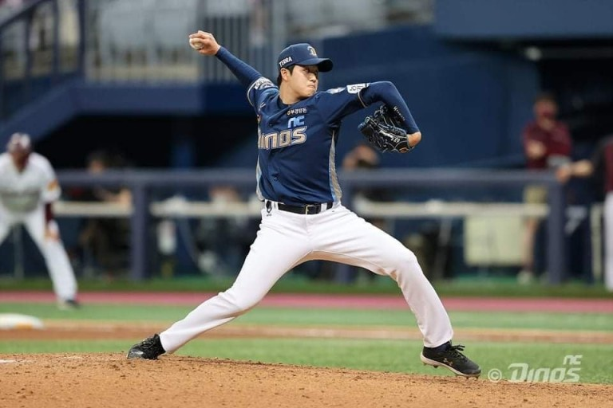

야구는 투수가 던진 공을 타자가 쳐서 베이스로 살아나가는 방법으로 진행되는 구기 종목으로 체육의 기본 기술이 골고루 필요한 인기 스포츠이다.
투수가 던진 공을 타자가 쳐서 베이스로 살아나가는 방법으로 진행되는 구기 종목으로 체육의 기본 기술이 골고루 필요한 인기 스포츠이다. 1루, 2루, 3루, 홈의 네 베이스를 사용하므로
이 경기를 일컬어 베이스볼(base ball)이라 한다. 미국, 일본, 한국, 대만, 호주, 이탈리아, 필리핀, 쿠바 등의 여러 나라에서 성행하고 있다. 우리나라에는 야구가 들어온 지 100년이 되는 역사가 되며
프로야구가 성행하고 있어 대중적인 인기를 크게 얻고 있다.
달리기, 뛰기, 던지기 등의 기본적인 운동 외에도 타격하기와 잡기가 가미되어 박진감과 흥미가 풍부하고, 상대팀과의 경기 중, 상황에 따른 협동성, 판단력, 결단력 등이 승부에 중요한 영향을 미친다.
야구는 일반적으로 경식경기를 말하며, 여성적인 야구형 경기인 소프트볼(soft ball)과 일본에서 시작된 연식경기, 어린이들을 위한 티볼 경기 등이 유사 스포츠로서 자리를 차지하고 있으며
레크리에이션 스포츠로서의 가치를 지니고 있다